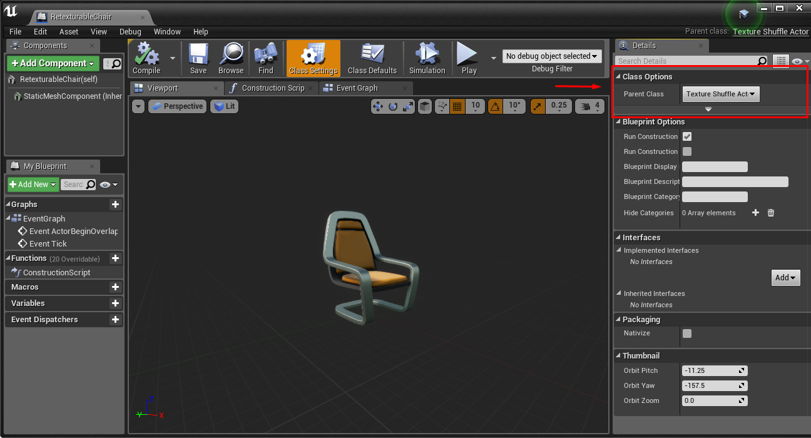

运行时纹理交换#
如何让参与者可重新纹理化#
要实现纹理可交换，Actor 必须从父类 TextureShuffleActor 派生。 父类可以通过 Actor 蓝图中的“设置”选项卡进行设置。

将父类设置为 TextureShuffActor 后，该对象将获得动态材质(DynamicMaterial) 成员。 场景中所有参与者实例的 DynamicMaterial 都需要设置为 TextureSwappableMaterial。
警告
在蓝图类中静态设置动态材质可能会导致渲染错误。在蓝图类中的所有 Actor 实例上设置该属性似乎效果更好。

如何定义可供选择的纹理集#
通常，某些参与者子集会彼此共享一组纹理选项。（例如，属于同一建筑物的墙壁）
使用虚幻引擎的群组编辑功能可以轻松设置这些分组。 选择所有应具有相同纹理选择的实例，然后通过“详细信息”面板同时将纹理添加到所有实例。 使用相同的技术为参与者组添加描述性标签，这些标签将用于在 API 中对其进行寻址。

理想的做法是从较大的分组到较小的分组，只需取消选择参与者即可缩小分组范围，最后应用任何单个参与者的属性。

如何通过 API 交换纹理#
以下 API 适用于 C++ 和 Python。（此处显示 C++）
std::vector<std::string> simSwapTextures(const std::string& tags, int tex_id);
由“,”或“，”分隔的标签字符串标识要对哪些参与者执行交换。 tex_id 为分配给每个进行交换的参与者的纹理数组提供索引。 该函数将返回与提供的标签匹配且已执行纹理交换的对象列表。 如果 tex_id 超出了某些对象纹理集的范围，则将取可用纹理数量的模数。
演示 (Python):
import airsim
import time
c = airsim.client.MultirotorClient()
print(c.simSwapTextures("furniture", 0))
time.sleep(2)
print(c.simSwapTextures("chair", 1))
time.sleep(2)
print(c.simSwapTextures("table", 1))
time.sleep(2)
print(c.simSwapTextures("chair, right", 0))
结果:
['RetexturableChair', 'RetexturableChair2', 'RetexturableTable']
['RetexturableChair', 'RetexturableChair2']
['RetexturableTable']
['RetexturableChair2']
请注意，在此示例中，每个参与者针对相同的索引值选择了不同的纹理。
您还可以使用 simSetObjectMaterial 和 simSetObjectMaterialFromTexture API 将对象的材质设置为任何材质资源或纹理的文件路径。
有关使用这些 API 的更多信息，请参阅 纹理 API 。